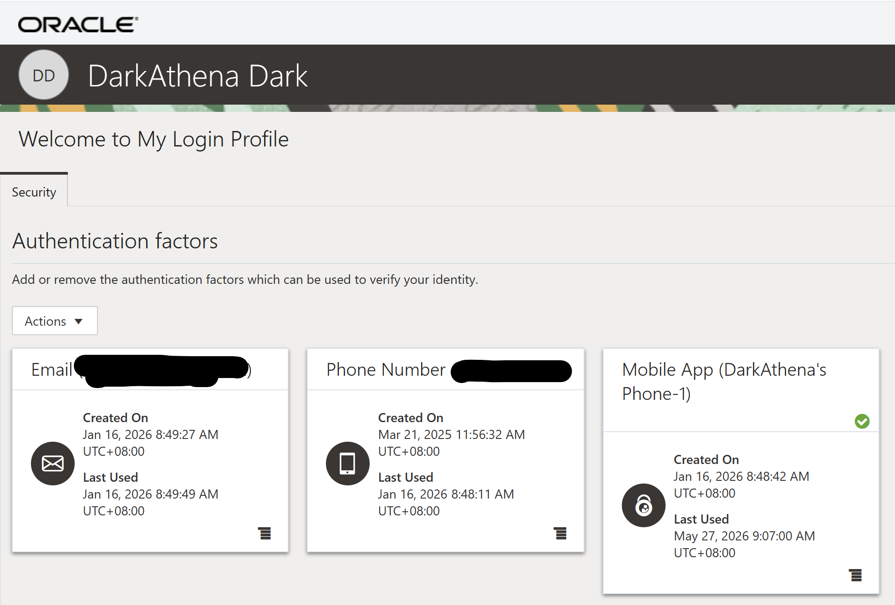
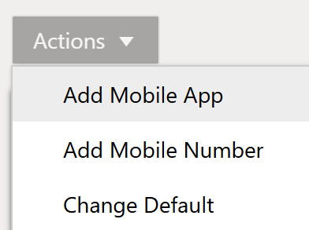
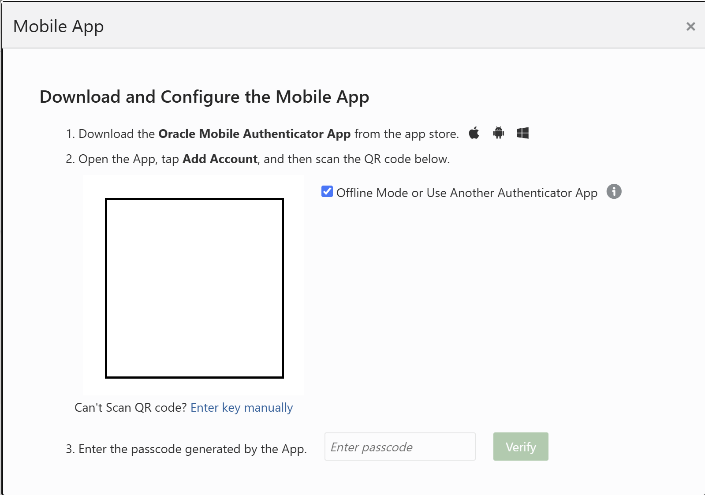
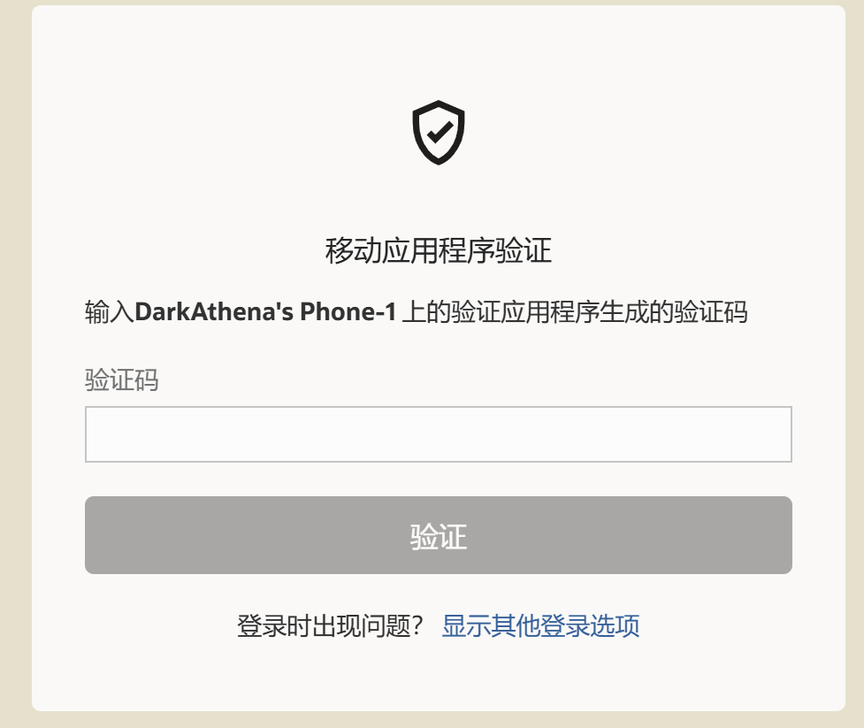

【ORACLE】添加短信以外的双因素认证方式
背景
自从ORACLE网站强制双因素认证后，有一些共用账号的网友叫苦不迭，每次登录都要短信验证码，但账号绑定的手机号又不是自己的。
但其实ORACLE除了短信验证码，还支持其他的双因素验证方式，比如邮箱和OTP。只是ORACLE把管理双因素验证的方式隐藏得太深，而且非常不符合IT直觉——添加验证方式竟然不在账户管理页面。
操作步骤
1. 进入安全设置页面
我也不记得之前是点哪里点进去的了，但是保存了这个页面URL：
https://login-ext.identity.oraclecloud.com/ui/v1/myconsole?root=my-info&my-info=my_profile_security
可以先在ORACLE首页 https://www.oracle.com 正常登录后再进这个页面，也可以直接在这个页面上登录。

2. 配置 Mobile App（OTP）
进入这个页面后，会显示当前有邮箱和手机号两种，第三个 Mobile App 是没有配置的。
点击 Mobile App 进行配置，或者点击左边的 Actions → Add Mobile APP：


3. 使用OTP软件绑定
勾上 "Offline Mode or Use Another Authenticator App"，然后使用你的OTP软件扫描二维码，就添加到你的OTP软件里去了。
在OTP软件里就可以生成对应的6位数验证码，填到网页上的输入框里，再点击 Verify 按钮即可。
4. 设置为默认认证方式
你把这种认证方式改为默认，在 Actions → Change Default 里选择一个就行。
之后再去登录的时候，输入完密码后，就不需要短信验证码了，取而代之的是让你输入OTP上的验证码：

注意事项
如果没有勾上 "Offline Mode or Use Another Authenticator App"，就必须使用Oracle官方的 Oracle Mobile Authenticator App。
⚠️ 注意：勾上和没勾上，两个二维码是不一样的。
什么是OTP？
可能有些伙伴还不知道OTP是什么，简单来说：
- 这是一种公开的根据密钥生成验证码的算法
- 每隔 30秒 生成一个新的验证码
- 算法不需要联网，离线也能用
- 你不需要下载专用软件，网上有非常多的免费OTP软件，下载一个就行
- 很多需要OTP验证的网站密钥都可以添加到这一个OTP软件里去
当然，很多公司的运维人员手机里早就有这种OTP软件了，用于堡垒机登录。
吐槽
国内访问ORACLE服务依旧是各种卡，页面超时。但有时候要看几个MOS文档或者下载什么东西又不得不登录一下，光登录就可以卡你好几分钟，不知道ORACLE在国内的基础建设建到哪里去了。